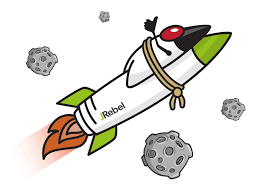

Como evitar redeploy em projetos Java? Conheça o JRebel
Será que é possível evitar o redeploy em projetos java ao alterar ou adicionar classes e arquivos de configurações?
Já imaginou quanto tempo você economizaria se o redeploy não fosse necessário ao adicionar um novo método em uma classe ou ao alterar um XML ou anotação do seu framework preferido?
JRebel: a solução
Com JRebel isso é possível.
Você pode trabalhar em projetos Java com muito mais produtividade.
Download
Para fazer download, acesse a página do JRebel e faça o seu cadastro.
Gostou do artigo? Entre em contato